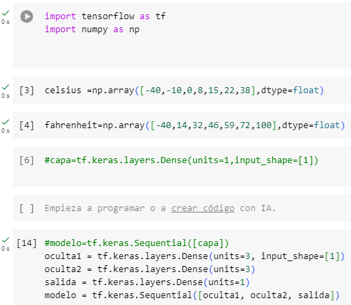
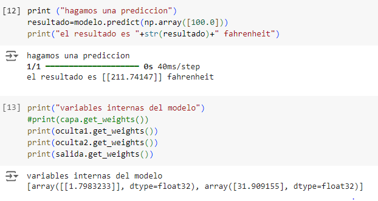
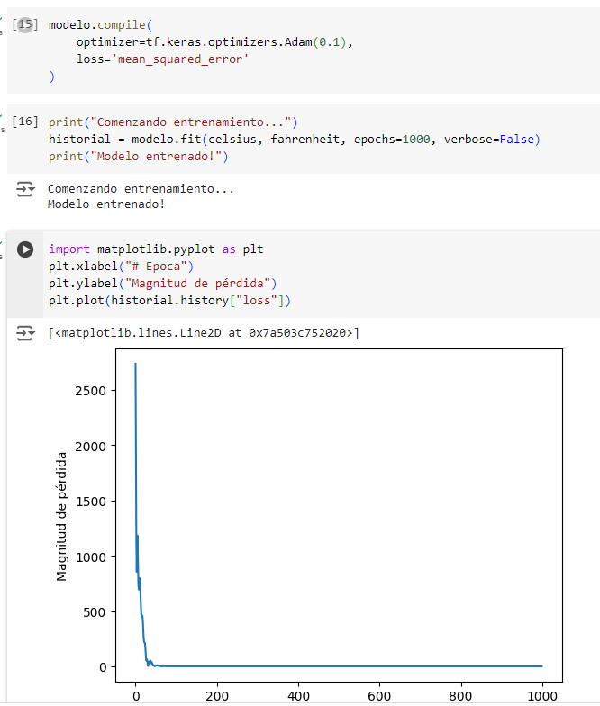
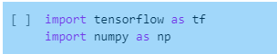
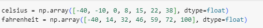
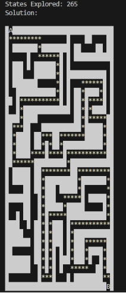
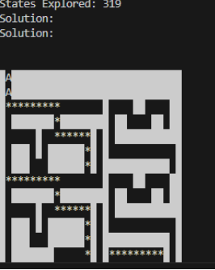
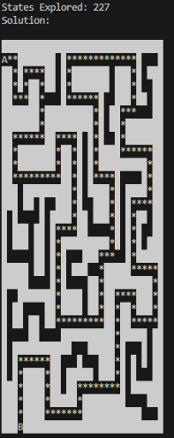
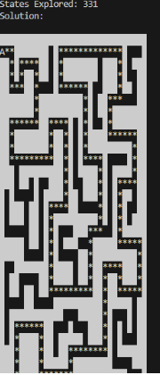

en el dia de hoy aprendi a utilizar la herramienta de excel con la utlizacion de una formula para poder sacar el numero de inteligencia articiales que mas utilizan los estudiantes del curso de inteligencia artifical


Se agruparon las actividades que eran similares y se contaron manualmente

vimos que datos se repetían y buscamos graficar de cierto que nos brindara dicha información en una grafica de pastel

Elegimos la columna número 5 y sacamos las palabras repetidas con la ayuda de chatGPT y las rectificamos manualmente e hicimos lo mismo con las palabras únicas (que no se repetían) Luego último hicimos la suma de las palabras repetidas y también sacamos el número de palabras únicas y por último hicimos un gráfico circular 3D con los números de las palabras repetidas

en el dia de hoy arendi un poco sobre la inteligencia artifical a conocer los algoritmos (busqueda,profundidad,cola)las pilas (pila lifo),tambien conocimos un poco la historia sobre alan turing como fue creada la maquina enigma y conocer como penso alan para poder hacer el algoritmo de la maquina enigma
hoy aprendi un poco sobre el tema de las redes neuronales que es un metodo de la inteligencia artifical practicamente lo que realiza es que enseña a las computadoras a procesar datos de una manera muy similar a como nosotros los seres humanos lo hacemos.
bueno en el video que vimos sobre las redes neuronales vimos un grafico que se separaba por unos circulos pequeños que hacian conexion con otros cirulos formando una red hasta llegar unos numeros, esta red neuronal tenia 784 pixeles que es el total de la imagen que tenia 28 pixeles se multiplicaba por el mismo valor y llegar a un total de 784 pixeles.
una neurona almacena y guarda un numero entre 0 y 1
en el dia de hoy aprendimos un poco mas sobre las redes neuronales con un ejercicio practico en google colab con python
  en el dia de hoy nos explico sobre los tipos de los modelos de lenguajes menciono los modelos basados en reglas que practicamente se utiliza para poder procesar el lenguaje,tambien hablo sobre los modelos estadisticos y los modelos de aprendizaje profundo. una de las ventajas que tiene es la versatilidad en las aplicaciones y tambien mejora continua.
vimos tambien el funcionamiento de unos algoritmos greedy best-first search
explicacion del codigo punto #4
primero que todo importamos las librerias el tensorflow es una libreria de inteligencia artifical y la libreria numpy para trabajar facilmente los arreglos numericos
despues creamos un arreglo de numeros donde colocaremos las 7 entradas de numeros celsius.despues creamos otro arreglo para ver los resultados fahrenheit
luego creamos variable de tipo capa densa que tiene conexionescon neuronas,las registramos y le indicamos las unidades o neuronas de la capa. en la capa de salida solamente utilizamos una neurona.luego creamos un modelo secuencial para la paca que creamos.la dejamos comentada.
Esta línea crea una capa densa (totalmente conectada) llamada oculta1,esta capa contiene 3 neuronas y recibe entradas con una dimensión, es decir, cada dato de entrada será un valor escalar. la siguiente linea de codigo define otra capa densa llamada oculta2 con 3 neuronas.luego definimos la capa de salida que solamente contiene una neurona de salida.crea un modelo secuencial llamado modelo, en el cual las capas se conectan de forma secuencial en el orden especificado: primero oculta1, luego oculta2, y finalmente salida.
luego en el modelo compilamos y eliginos dos propiedades el optimizer y la funcion de perdida y en el optimizador utilizaremos un algoritmo llamado adam y le permite a la red como ajustar los pesos para que sea mas eviciente.para la siguiente linea de codigo utilizaremos una funcion llamada mean_squared_error.
imprimimos comenzando el entrenamiento ,luego vamos a entrenar el modelo y utilizaremos la funcion fit y le indicamos los datos de entrada de los grados celsius y farenheit y seguidamente imprimimos el modelo entrenado.
luego miramos el resultado de la funcion de perdidaseguidamente de eso ya podemos visualizar la grafica, se hace la importacion de la libreria de matplot.pyplot y la renombramos con plt.
seguidamente hacemos la imprecion de una prediccion ,en la variable resultado tenemos el modelo y le colocamos una prediccion de 100.0 y seguidamente umplimimos el resultado.
luego imprimimos las variables internas del modelo imprimimos oculta1,ocultado y la salida y ps obtenemos los resultados.
punto #3
| para el laberinto #1: | con el algoritmo dfs recorrio un total de 265 nodos |
| para el laberinto #1: | con el algoritmo bfs recorrio un total de 319 nodos |
| para el laberinto #2: | con el algoritmo dfs recorrio un total de 227 nodos |
| para el laberinto #2: | con el algoritmo bfs recorrio un total de 319 nodos |
| para el laberinto #1: |  |
| para el laberinto #1: |  |
| para el laberinto #2: |  |
| para el laberinto #2: |  |
#Este módulo de Python proporciona funciones para crear iteradores que permiten recorrer combinaciones y permutaciones de elementos de forma eficiente
import itertools
#Esta es una clase base abstracta que define la estructura para las diferentes sentencias lógicas
class Sentence():
#Método abstracto que debe ser implementado por las subclases para evaluar la sentencia lógica en función de un model (una asignación de valores de verdad)
def evaluate(self, model):
"""Evaluates the logical sentence."""
raise Exception("nothing to evaluate")
# Devuelve la representación de la fórmula lógica como una cadena de texto.
def formula(self):
"""Returns string formula representing logical sentence."""
return ""
# Devuelve un conjunto de todos los símbolos (variables) que aparecen en la sentencia
def symbols(self):
"""Returns a set of all symbols in the logical sentence."""
return set()
#Verifica que un objeto sea una instancia de Sentence, lanzando una excepción si no lo es.
@classmethod
def validate(cls, sentence):
if not isinstance(sentence, Sentence):
raise TypeError("must be a logical sentence")
#Añade paréntesis alrededor de una expresión, si es necesario, asegurando que esté correctamente parentetizada.
@classmethod
def parenthesize(cls, s):
"""Parenthesizes an expression if not already parenthesized."""
# Función auxiliar que verifica si una cadena tiene paréntesis balanceados.
def balanced(s):
"""Checks if a string has balanced parentheses."""
count = 0
for c in s:
if c == "(":
count += 1
elif c == ")":
if count <= 0:
return False
count -= 1
return count == 0
if not len(s) or s.isalpha() or (
s[0] == "(" and s[-1] == ")" and balanced(s[1:-1])
):
return s
else:
return f"({s})"
#Esta clase representa una variable lógica.
class Symbol(Sentence):
#Inicializa un símbolo con un nombre.
def __init__(self, name):
self.name = name
#Define la igualdad entre símbolos comparando sus nombres
def __eq__(self, other):
return isinstance(other, Symbol) and self.name == other.name
#Permite usar objetos Symbol en colecciones que dependen de hash, como conjuntos o diccionarios
def __hash__(self):
return hash(("symbol", self.name))
#Devuelve el nombre del símbolo como su representación en texto.
def __repr__(self):
return self.name
#Evalúa el valor de verdad del símbolo según el model (si existe, retorna su valor de verdad, de lo contrario lanza una excepción)
def evaluate(self, model):
try:
return bool(model[self.name])
except KeyError:
raise EvaluationException(f"variable {self.name} not in model")
#Devuelve el nombre del símbolo como fórmula.
def formula(self):
return self.name
#Devuelve el símbolo en un conjunto
def symbols(self):
return {self.name}
#Representa una negación lógica.
class Not(Sentence):
#Inicializa la negación con un operando, asegurándose de que el operando sea una instancia de Sentence.
def __init__(self, operand):
Sentence.validate(operand)
self.operand = operand
def __eq__(self, other):
return isinstance(other, Not) and self.operand == other.operand
def __hash__(self):
return hash(("not", hash(self.operand)))
def __repr__(self):
return f"Not({self.operand})"
#Devuelve el valor de verdad de la negación del operando, evaluándolo en el model.
def evaluate(self, model):
return not self.operand.evaluate(model)
#Devuelve la fórmula con la negación (usando ¬).
def formula(self):
return "¬" + Sentence.parenthesize(self.operand.formula())
#Devuelve el conjunto de símbolos que aparecen en el operando.
def symbols(self):
return self.operand.symbols()
#Representa una conjunción lógica (operador AND).
class And(Sentence):
#nicializa la conjunción con uno o más operandos
def __init__(self, *conjuncts):
for conjunct in conjuncts:
Sentence.validate(conjunct)
self.conjuncts = list(conjuncts)
def __eq__(self, other):
return isinstance(other, And) and self.conjuncts == other.conjuncts
def __hash__(self):
return hash(
("and", tuple(hash(conjunct) for conjunct in self.conjuncts))
)
def __repr__(self):
conjunctions = ", ".join(
[str(conjunct) for conjunct in self.conjuncts]
)
return f"And({conjunctions})"
def add(self, conjunct):
Sentence.validate(conjunct)
self.conjuncts.append(conjunct)
#Evalúa cada operando en el model, devolviendo True solo si todos los operandos son verdaderos.
def evaluate(self, model):
return all(conjunct.evaluate(model) for conjunct in self.conjuncts)
# Devuelve la fórmula de la conjunción (separando los operandos con ∧).
def formula(self):
if len(self.conjuncts) == 1:
return self.conjuncts[0].formula()
return " ∧ ".join([Sentence.parenthesize(conjunct.formula())
for conjunct in self.conjuncts])
#Devuelve el conjunto de símbolos que aparecen en todos los operandos.
def symbols(self):
return set.union(*[conjunct.symbols() for conjunct in self.conjuncts])
#Representa una disyunción lógica (operador OR).
class Or(Sentence):
#Inicializa la disyunción con uno o más operandos (disjuncts).
def __init__(self, *disjuncts):
for disjunct in disjuncts:
Sentence.validate(disjunct)
self.disjuncts = list(disjuncts)
def __eq__(self, other):
return isinstance(other, Or) and self.disjuncts == other.disjuncts
def __hash__(self):
return hash(
("or", tuple(hash(disjunct) for disjunct in self.disjuncts))
)
def __repr__(self):
disjuncts = ", ".join([str(disjunct) for disjunct in self.disjuncts])
return f"Or({disjuncts})"
#Evalúa cada operando en el model, devolviendo True si al menos uno de los operandos es verdadero.
def evaluate(self, model):
return any(disjunct.evaluate(model) for disjunct in self.disjuncts)
#Devuelve la fórmula de la disyunción (separando los operandos con ∨).
def formula(self):
if len(self.disjuncts) == 1:
return self.disjuncts[0].formula()
return " ∨ ".join([Sentence.parenthesize(disjunct.formula())
for disjunct in self.disjuncts])
# Devuelve el conjunto de símbolos que aparecen en todos los operandos.
def symbols(self):
return set.union(*[disjunct.symbols() for disjunct in self.disjuncts])
#Representa una implicación lógica (A => B).
class Implication(Sentence):
#Inicializa la implicación con un antecedente y un consecuente.
def __init__(self, antecedent, consequent):
Sentence.validate(antecedent)
Sentence.validate(consequent)
self.antecedent = antecedent
self.consequent = consequent
def __eq__(self, other):
return (isinstance(other, Implication)
and self.antecedent == other.antecedent
and self.consequent == other.consequent)
def __hash__(self):
return hash(("implies", hash(self.antecedent), hash(self.consequent)))
def __repr__(self):
return f"Implication({self.antecedent}, {self.consequent})"
#Evalúa la implicación en el model (devuelve True si el antecedente es falso o el consecuente es verdadero).
def evaluate(self, model):
return ((not self.antecedent.evaluate(model))
or self.consequent.evaluate(model))
#Devuelve la fórmula de la implicación (en la forma antecedent => consequent).
def formula(self):
antecedent = Sentence.parenthesize(self.antecedent.formula())
consequent = Sentence.parenthesize(self.consequent.formula())
return f"{antecedent} => {consequent}"
# Devuelve el conjunto de símbolos que aparecen en ambos, antecedente y consecuente.
def symbols(self):
return set.union(self.antecedent.symbols(), self.consequent.symbols())
#Representa una bicondicional lógica (A <=> B).
class Biconditional(Sentence):
#Inicializa la bicondicional con dos operandos.
def __init__(self, left, right):
Sentence.validate(left)
Sentence.validate(right)
self.left = left
self.right = right
def __eq__(self, other):
return (isinstance(other, Biconditional)
and self.left == other.left
and self.right == other.right)
def __hash__(self):
return hash(("biconditional", hash(self.left), hash(self.right)))
def __repr__(self):
return f"Biconditional({self.left}, {self.right})"
# Evalúa si ambos operandos son verdaderos o ambos son falsos.
def evaluate(self, model):
return ((self.left.evaluate(model)
and self.right.evaluate(model))
or (not self.left.evaluate(model)
and not self.right.evaluate(model)))
#Devuelve la fórmula de la bicondicional (en la forma A <=> B).
def formula(self):
left = Sentence.parenthesize(str(self.left))
right = Sentence.parenthesize(str(self.right))
return f"{left} <=> {right}"
#Devuelve el conjunto de símbolos que aparecen en ambos operandos.
def symbols(self):
return set.union(self.left.symbols(), self.right.symbols())
#Verifica si una base de conocimiento (knowledge) implica una consulta (query).
def model_check(knowledge, query):
"""Checks if knowledge base entails query."""
#Verifica si la base de conocimiento implica la consulta en todos los posibles modelos (asignaciones de verdad).
def check_all(knowledge, query, symbols, model):
"""Checks if knowledge base entails query, given a particular model."""
# si el modelo tiene una asignacion para cada simbolo
if not symbols:
# Si la base de conocimiento es verdadera en el modelo, entonces la consulta también debe ser verdadera
if knowledge.evaluate(model):
return query.evaluate(model)
return True
else:
# Elegir uno de los símbolos no utilizados restantes
remaining = symbols.copy()
p = remaining.pop()
# Crear un modelo donde el símbolo sea verdadero
model_true = model.copy()
model_true[p] = True
# Crear un modelo donde el símbolo sea falso
model_false = model.copy()
model_false[p] = False
# Asegurar que la implicación se mantenga en ambos modelos
return (check_all(knowledge, query, remaining, model_true) and
check_all(knowledge, query, remaining, model_false))
# Obtener todos los símbolos tanto en la base de conocimiento como en la consulta
symbols = set.union(knowledge.symbols(), query.symbols())
# Verificar que la base de conocimiento implique la consulta
return check_all(knowledge, query, symbols, dict())
from logic import *
lluvia = Symbol("lluvia")
bbc = Symbol("bbc")
unimayor = Symbol("unimayor")
knowledge = And(
Implication(Not(lluvia), bbc),
Or(bbc, unimayor),
Not(And(bbc, unimayor)),
unimayor
)
print(model_check(knowledge, rain))